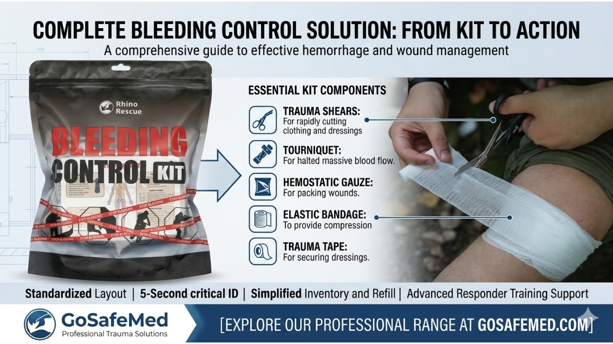

Every Second Counts: How Modular Design Eliminates Search Panic in Massive Hemorrhage Response
MAY 22, 2026

When dealing with a massive hemorrhage, survival is measured in single-digit seconds. A femoral artery bleed can become fatal in less than three minutes. Yet, in high-stress industrial, tactical, or remote environments, the biggest bottleneck to saving a life isn't the skill of the first responder—it is the chaos inside the trauma bag.
If your workplace trauma kit requires a responder to dump out loose items to find a tourniquet, your safety protocol is already failing. Here is how upgrading to an action-based modular system changes the calculus of emergency response, mitigates corporate risk, and protects your workforce across highly regulated global markets.
1. Eliminating “Search Panic” and Responder Error
In a severe accident, cognitive tunneling sets in. Adrenaline spikes, fine motor skills degrade, and even trained personnel experience “search panic” if gear is disorganized.
By transitioning from loose gear to dedicated Stop the Bleed kits, you eliminate the need for decision-making under pressure.
- The Solution: An integrated, action-specific module holds all necessary IFAK components—including the tourniquet and pressure bandage refill—in one highly visible, rapid-access pack.
- The Client Benefit: Responders don't look for individual items; they grab one single module dedicated to blood loss. This reduces response time from minutes to under five seconds, preventing predictable fatalities on site.
2. Legal Safeguards: Proving Due Diligence and Compliance (OSHA, ANSI, OHS)
For safety managers in markets with strict liability laws—such as the United States, Australia, Canada, and the EU—workplace safety is a major legal liability. If an investigation reveals that a worker suffered severe complications or death because first aid gear was disorganized, expired, or delayed, the corporate liability can be devastating.
- The US Market Reality: Under OSHA compliance guidelines (including ANSI/ISEA Z308.1 workplace first aid standards), employers are required to provide readily accessible medical supplies. Cluttered, unmanaged kits fail safety audits and open the door to massive personal injury lawsuits.
- The Global Risk: In Canada (OHS) and Australia (Safe Work Australia), messy first aid setups signal a lack of operational oversight.
- The Solution: Implementing standardized tactical medical supplies in a modular format serves as undeniable physical proof of a company's commitment to “Due Diligence.”
- The Client Benefit: It streamlines internal auditing. Safety officers can verify life-saving compliance in seconds just by checking if the module seal is intact, shielding the enterprise from regulatory fines and litigation.
3. Streamlining the Refill Cycle
Traditional first aid setups suffer from “inventory fatigue.” When one bandage is used, the entire kit often stays incomplete because reordering single loose items is an administrative hassle.
GoSafeMed solves this operational bottleneck by treating modules as complete units of supply. When a module is opened, you replace the module, not the pieces. This ensures that your facility is always 100% prepared for the next critical event without wasting hours tracking individual item quantities.
Discover how the Elite-Guard Series by GoSafeMed transforms workplace safety from a compliance chore into a bulletproof defense system.
Explore our certified range at GoSafeMed.com.